خزانات • 6 دقائق قراءة
شركة تنظيف خزانات: ما الذي يميز الخدمة الاحترافية؟
اختيار شركة تنظيف خزانات موثوقة يضمن الحفاظ على جودة المياه ويحد من تراكم الرواسب والطحالب.
تعتمد الخدمة الاحترافية على تنظيف خزانات مياه بخطوات واضحة، ثم تعقيم خزانات المياه بمواد آمنة ومعتمدة.
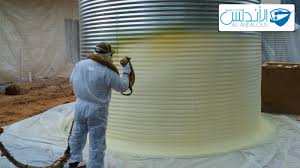
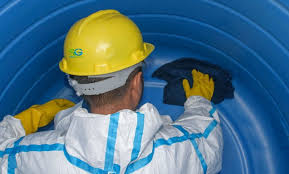
معايير الاختيار
يُفضّل التأكد من وضوح الإجراءات، وتوفر معدات مناسبة، واستخدام مواد لا تضر بمياه الشرب.
كما أن الالتزام بالمواعيد وتقديم ضمانات واضحة مؤشران مهمان عند اختيار أفضل شركة تنظيف خزانات.
خزانات • 7 دقائق قراءة
تنظيف خزانات مياه الشرب: دليل آمن لصحة الأسرة
إن تنظيف خزانات مياه الشرب بصورة دورية يقلل من احتمالات تلوث المياه، ويساعد على التخلص من الرواسب والروائح غير المرغوبة.
ويُنصح دائمًا بالجمع بين غسيل خزانات وتنظيف خزانات مع التعقيم لتحقيق حماية إضافية ضد البكتيريا.
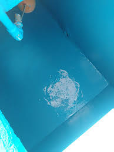
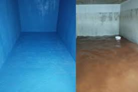
متى يجب تنظيف الخزان؟
من العلامات التي تستدعي التنظيف: تغيّر لون المياه، ظهور رائحة، أو وجود رواسب ملحوظة.
كما يفضّل فحص الخزان بعد الأمطار وقبل الصيف، لضمان بقاء المياه ضمن جودة مناسبة للاستخدام اليومي.
خزانات • 6 دقائق قراءة
غسيل خزانات المياه خطوة بخطوة مع التعقيم
يبدأ غسيل خزانات المياه بتفريغ الخزان وإزالة الرواسب، ثم تنظيف الجدران والأرضية بعناية، يلي ذلك الشطف الجيد.
وبعد الانتهاء تأتي خطوة تعقيم خزانات المياه لضمان تقليل الميكروبات والطحالب وتحسين جودة المياه.
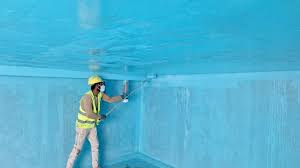
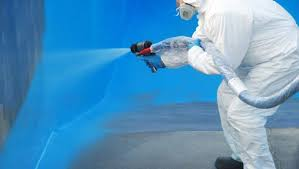
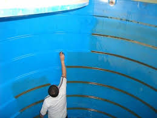
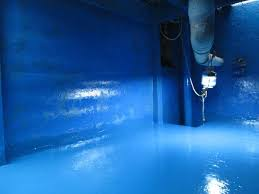
إرشاد مهم
ينبغي تجنب استخدام مواد مجهولة المصدر داخل خزانات مياه الشرب، والحرص على اختيار تنظيف خزانات بدون مواد ضارة.
كما يُنصح بإحكام الغطاء ومعالجة الشقوق لمنع دخول الأتربة والحشرات.
تعقيم • 5 دقائق قراءة
تعقيم خزانات المياه: أفضل الممارسات ومواد التعقيم
يختلف التعقيم عن التنظيف؛ فالتنظيف يركز على إزالة الرواسب والأوساخ، بينما يستهدف التعقيم تقليل البكتيريا والطحالب.
لذلك يُعد تعقيم خزانات المياه خطوة مكملة لضمان مياه أكثر أمانًا للاستخدام.
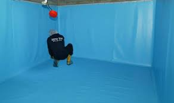
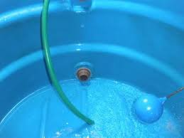
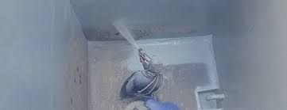
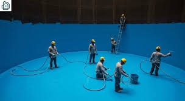
اختيار المواد
تُستخدم مواد معتمدة بتركيزات محسوبة وفق نوع الخزان وطبيعة الاستخدام، مع الالتزام بوقت التلامس والشطف وفق الإرشادات.
ويُفضّل التعامل مع شركة تعقيم خزانات لديها خبرة واضحة وإجراءات معلنة.
خزانات • 6 دقائق قراءة
تنظيف الخزانات الأرضية والعلوية: فروقات مهمة
تختلف آلية تنظيف خزانات أرضية عن تنظيف خزانات علوية من حيث الوصول واحتياطات السلامة وتجمع الرواسب.
ويؤثر ذلك على زمن العمل ونوع المعدات المستخدمة، مع ثبات الهدف: مياه أكثر نقاءً وخزان أكثر أمانًا.
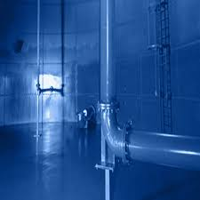
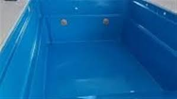
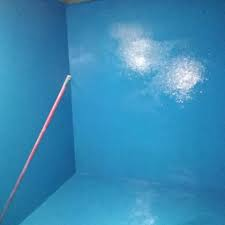

ماذا يجب مراعاته؟
في الخزانات العلوية تُقدّم السلامة أولوية، بينما في الخزانات الأرضية تُعالج الرواسب غالبًا بكثافة أعلى.
وفي الحالتين يفضّل تنفيذ تنظيف خزانات مع التعقيم لضمان نتيجة متكاملة.
عزل • 6 دقائق قراءة
متى يجب عزل الأسطح؟ علامات لا ينبغي تجاهلها
تتأثر الأسطح بالعوامل المناخية المختلفة مثل الحرارة المرتفعة، والأمطار، والرطوبة،
مما يجعل عزل الأسطح خطوة ضرورية لحماية المبنى من التسربات والتلف مع مرور الوقت.
وتزداد الحاجة إلى العزل عند ظهور مؤشرات واضحة على ضعف السطح.
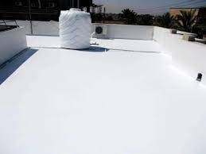
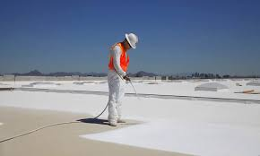
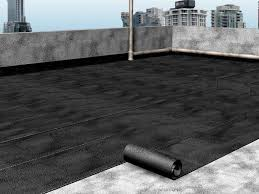
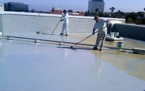
أبرز العلامات التي تستدعي عزل السطح
من أهم العلامات: تسرب المياه إلى الأسقف الداخلية، ظهور تشققات أو تقشّر في السطح،
ارتفاع درجة حرارة المبنى، أو تراكم الرطوبة.
إن معالجة هذه المشكلات في وقت مبكر تقلل من الأضرار الإنشائية وتطيل عمر المبنى.
عزل • 7 دقائق قراءة
العزل المائي للأسطح: حماية فعالة من التسربات
يُعد العزل المائي للأسطح من أهم الحلول الوقائية التي تمنع تسرب مياه الأمطار
وتحافظ على سلامة الخرسانة والأسقف الداخلية.
ويساعد العزل الجيد على تجنب تكاليف الصيانة المتكررة الناتجة عن الرطوبة.
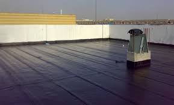
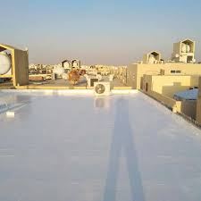
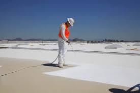
فوائد العزل المائي
يساهم العزل المائي في منع تشققات الخرسانة، وحماية الأسطح من التآكل،
وتقليل فرص نمو العفن والرطوبة داخل المبنى.
كما يعزز من عمر السطح ويحافظ على استقراره لفترات طويلة.
عزل • 7 دقائق قراءة
العزل الحراري للأسطح ودوره في تقليل الحرارة
يساعد العزل الحراري للأسطح على تقليل انتقال الحرارة إلى داخل المبنى،
مما ينعكس بشكل مباشر على راحة السكان وخفض استهلاك أجهزة التكييف.
ويُعد خيارًا مثاليًا في المناطق ذات درجات الحرارة المرتفعة.
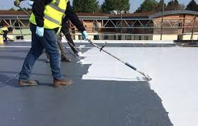
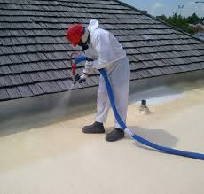
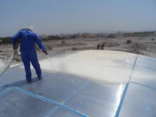
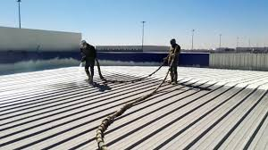
مميزات العزل الحراري
من أبرز المميزات: الحفاظ على درجة حرارة معتدلة داخل المبنى،
تقليل استهلاك الطاقة، وحماية السطح من التمدد والتقلص الناتج عن تغيّر درجات الحرارة.
كما يساهم العزل الحراري في رفع كفاءة المبنى بشكل عام.
مكافحة • 6 دقائق قراءة
مكافحة الحشرات: علامات مبكرة وحلول فعّالة
تظهر الحشرات غالبًا نتيجة الرطوبة، أو تراكم المخلفات، أو وجود فتحات غير محكمة داخل المنزل.
وتُعد مكافحة الحشرات في مراحلها المبكرة خطوة أساسية للحفاظ على بيئة صحية وآمنة،
والحد من انتشار الآفات التي قد تسبب أضرارًا صحية ومادية.
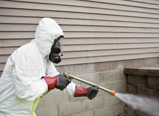
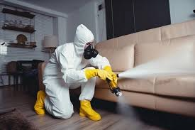
متى تحتاج إلى مكافحة الحشرات؟
عند ملاحظة تكرار ظهور الحشرات، أو وجود أعشاش، أو آثار مثل الروائح غير المرغوبة
أو تلف بعض الأثاث؛ يصبح التدخل ضروريًا.
وتساعد المعالجة المبكرة باستخدام مواد آمنة ومعتمدة على منع تكاثر الحشرات
والحفاظ على نظافة المكان لفترة أطول.
مكافحة • 7 دقائق قراءة
مكافحة الحشرات المنزلية: حلول آمنة ونتائج مستدامة
تُعد الحشرات المنزلية من أكثر المشكلات إزعاجًا، إذ تؤثر على راحة السكان
وقد تشكل خطرًا صحيًا عند إهمال معالجتها.
وتوفر مكافحة الحشرات بأساليب علمية وآمنة حماية فعالة
من انتشار الآفات داخل المنازل والمنشآت.
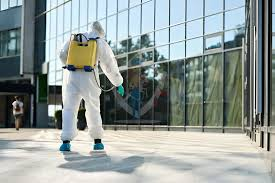

لماذا تُعد المكافحة المتخصصة ضرورية؟
تعتمد المكافحة المتخصصة على تحديد نوع الحشرة ومصدرها،
ثم استخدام مبيدات آمنة ومعتمدة لا تؤثر على صحة السكان أو الأطفال.
كما تساهم المعالجة الصحيحة في الحد من عودة الحشرات
والحفاظ على بيئة نظيفة وصحية لفترة أطول.